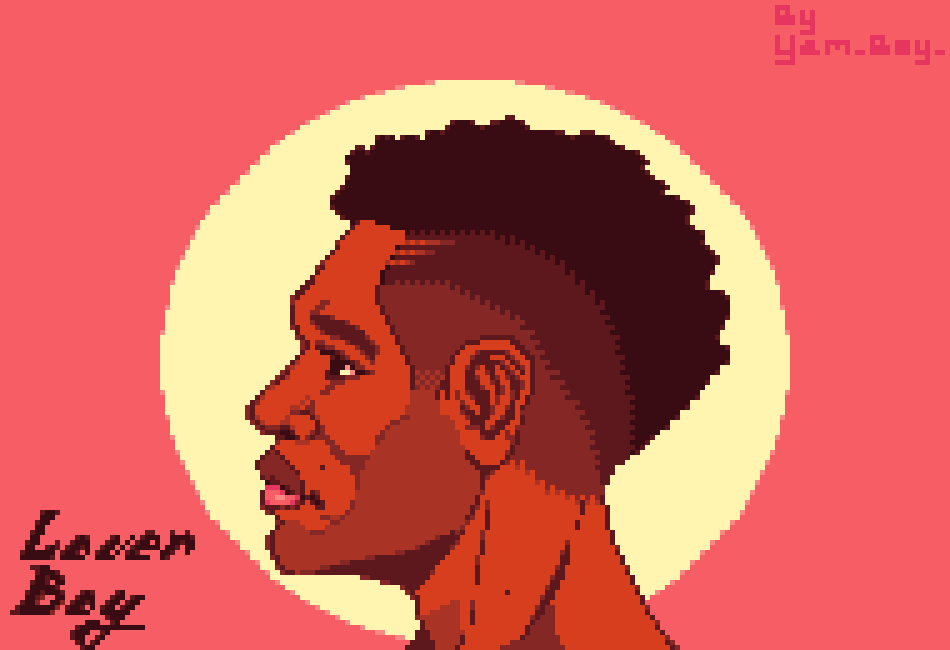
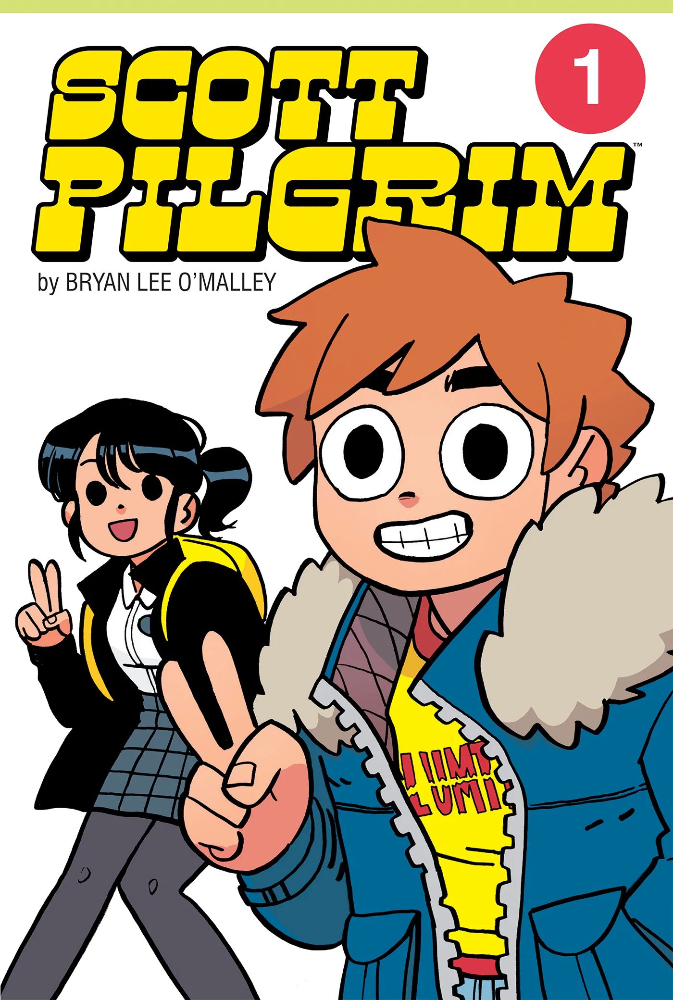
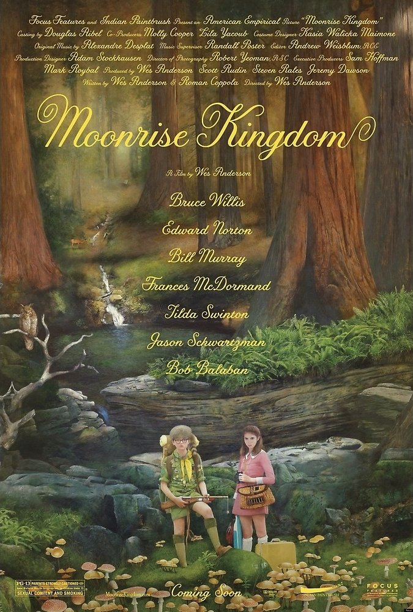
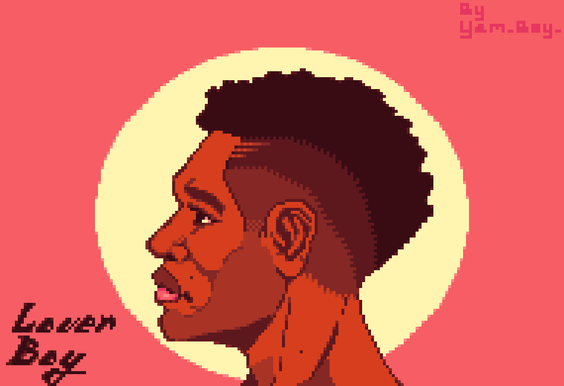

Art is the hobby I favor the most as it provides me with an outlet for me to express my creativity.
Here are some examples of my work:
| Art Work | ||
|---|---|---|
|  |  |
|
| Personal Page |
| Home Page | Personal Page | Professional Page | Storyboard Page | Development Page | References Page | |
Hello, It is I, the one, the don, the man, the myth, the legend, Gawayne Daniel Lowers.
I am truely sorrowful that we could not meet in person, but weep not, for, through this
web page you may get to learn more about me. I'm a young man, age 21, hailing from
a suburban community located in the bustling city of Kingston, Jamaica. Attending the
University of Technology, I aim to pursue a bachelor's in Computer Science.
For a visual representation of 'ya boi. I am a 5'8" tall man, medium built, sun-kissed
melanous skin and handsome Photo reference provided
I partake in a plethora of different media. I enjoy reading, listening to music & podcasts
and watching movies. My favorites are:
Music
Series

Movies

I indulge in a plethora of hobbies inclusive of art, writing, sleeping, excercising and more.
Art is the hobby I favor the most as it provides me with an outlet for me to express my creativity.
Here are some examples of my work:
Art Work

I enjoy the benefits of a pretty active social life.
I believe that the intricacies of the human mind are to far too numerous and diverse to be captured in a form of test.
There may be a few cases where the result of a test and the will of an individual may overlap, yes, but I see this as
coincidence or just the rational conclsion arrived at.
This test in particular, had a pool of questions that the user was supposed to pick an answer that is scaled from 0-5
(low to high) which does not accurately capture someone's viewpoints on a given topic or statement.
In my case based on the answers I gave to the questions and the results returned, I am further led to believe that this
test has a few flaws in its approach as I do not feel as thought the results accurately represented me, nor did some of
appeal to me.